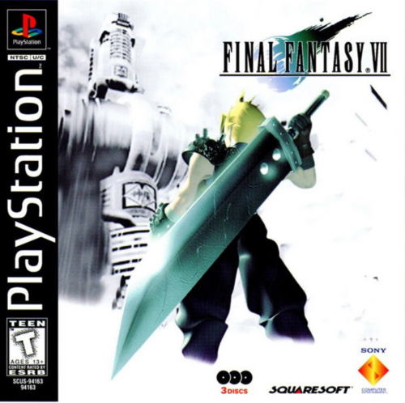

|  |
Final Fantasy VII
Rp 90.000
4.9 | 999+ Terjual
Final Fantasy VII (ファイナルファンタジーVII Fainaru Fantajī Sebun) adalah sebuah permainan peran konsol yang dirilis oleh Square Co., Ltd. (sekarang Square Enix) pada tahun 1997 dan disutradarai oleh Yoshinori Kitase. Ia adalah permainan pertama dalam seri Final Fantasy yang diproduksi untuk konsol permainan Sony PlayStation dan merupakan permainan pertama dalam seri ini yang diadaptasi untuk dapat dimainkan di komputer pribadi berbasis Microsoft Windows, dan permainan pertama sejak Final Fantasy NES yang dirilis dengan judul yang sama baik untuk Jepang dan Amerika Utara. Selain itu, ini adalah seri Final Fantasy pertama yang menggunakan CGI, dengan karakter-karakter yang dirender penuh dan latar belakang yang diprarender. Beli Wishlist |
| Beranda | Produk | Tentang Kami | Kontak | Masuk |
三茶屋Toko Game Sanjaya Jl. Raya Tlogomas No. XX, Lowokwaru, Tlogomas |
|
|
Copyrights © 1990 Toko Game Sanjaya, Created by Tholut A with Love <3
|
|